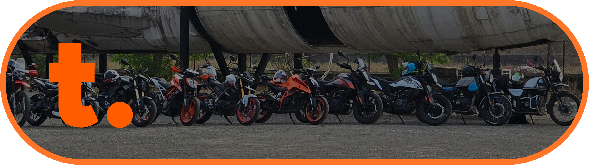
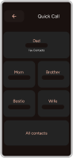

ThrottleApp.
A motorcycle companion app taken from concept to 300+ organic downloads. The product that taught me what it means to own the full lifecycle — from user interviews to Play Store launch.

Problem
Riders rely on a fragmented set of tools for navigation, group coordination, safety monitoring, and trip documentation. No single product addressed all four. The existing options were either too broad (general navigation apps) or too narrow (cycling trackers repurposed for motorcycles).
Process
Conducted 200+ user interviews and usability sessions across solo riders, touring groups, and daily commuters. Identified that safety (crash detection, emergency alerts) and group coordination (live location sharing, no-rider-left-behind) were the highest-urgency pain points. Built the MVP around these two pillars, keeping battery efficiency as a hard constraint since the app runs during rides.


Shipped Features
- Crash Detection: Accelerometer and gyroscope analysis with automatic emergency contact alerting.
- Live Location Sharing: Real-time group tracking with rider-down notifications.
- Automated Trip Logging: Route, speed, and photo capture without manual input.
- Quick Dial: One-tap emergency calling accessible from the ride screen.
Results
300+ organic downloads within 4 months. 10+ features shipped across two major releases. The project validated that the rider-safety niche has real demand, and taught me the discipline of shipping under real constraints — battery life, cellular dead zones, gloved-hand interaction.